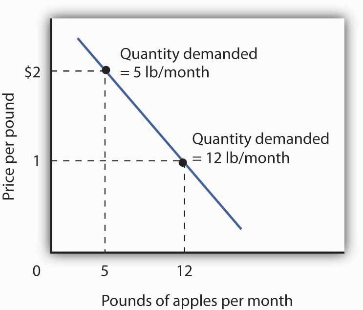
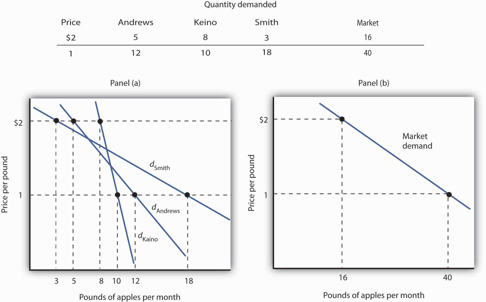
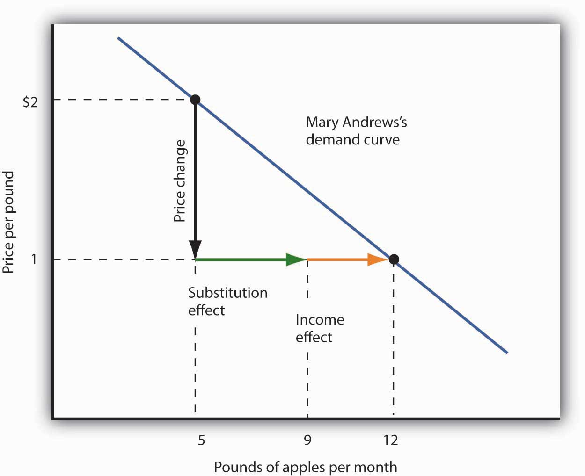
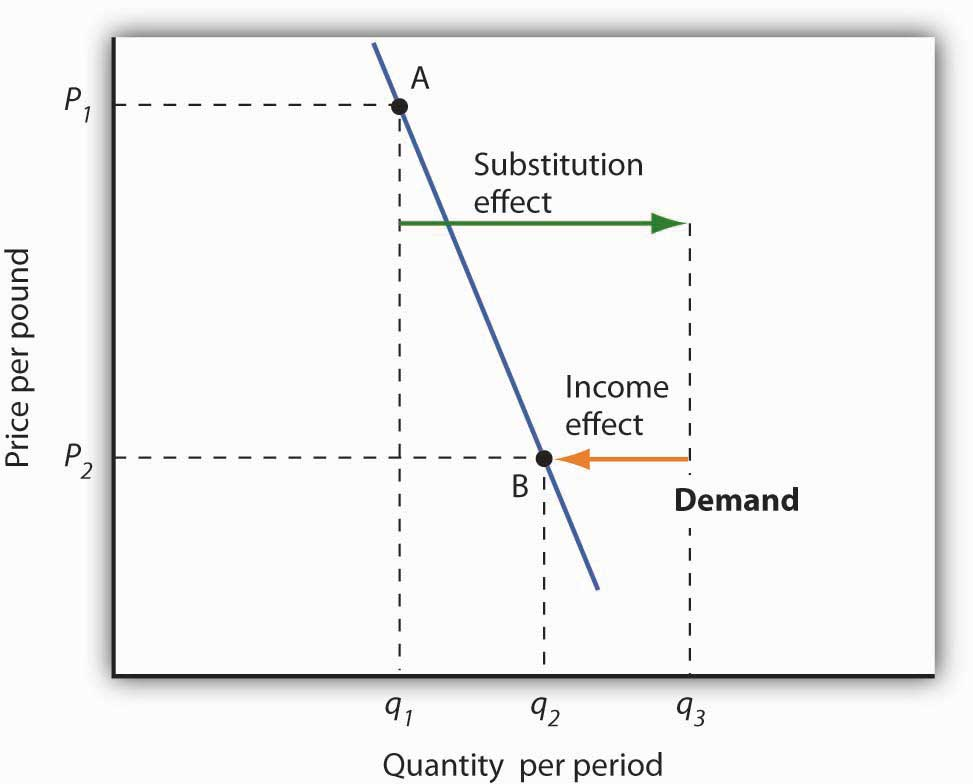

Choices that maximize utility—that is, choices that follow the marginal decision rule—generally produce downward-sloping demand curves. This section shows how an individual’s utility-maximizing choices can lead to a demand curve.
Suppose, for simplicity, that Mary Andrews consumes only apples, denoted by the letter A, and oranges, denoted by the letter O. Apples cost $2 per pound and oranges cost $1 per pound, and her budget allows her to spend $20 per month on the two goods. We assume that Ms. Andrews will adjust her consumption so that the utility-maximizing condition holds for the two goods: The ratio of marginal utility to price is the same for apples and oranges. That is,
Equation 7.4
Here MUA and MUO are the marginal utilities of apples and oranges, respectively. Her spending equals her budget of $20 per month; suppose she buys 5 pounds of apples and 10 of oranges.
Now suppose that an unusually large harvest of apples lowers their price to $1 per pound. The lower price of apples increases the marginal utility of each $1 Ms. Andrews spends on apples, so that at her current level of consumption of apples and oranges
Equation 7.5
Ms. Andrews will respond by purchasing more apples. As she does so, the marginal utility she receives from apples will decline. If she regards apples and oranges as substitutes, she will also buy fewer oranges. That will cause the marginal utility of oranges to rise. She will continue to adjust her spending until the marginal utility per $1 spent is equal for both goods:
Equation 7.6
Suppose that at this new solution, she purchases 12 pounds of apples and 8 pounds of oranges. She is still spending all of her budget of $20 on the two goods [(12 x $1)+(8 x $1)=$20].
Figure 7.2 Utility Maximization and an Individual’s Demand Curve
Mary Andrews’s demand curve for apples, d, can be derived by determining the quantities of apples she will buy at each price. Those quantities are determined by the application of the marginal decision rule to utility maximization. At a price of $2 per pound, Ms. Andrews maximizes utility by purchasing 5 pounds of apples per month. When the price of apples falls to $1 per pound, the quantity of apples at which she maximizes utility increases to 12 pounds per month.
It is through a consumer’s reaction to different prices that we trace the consumer’s demand curve for a good. When the price of apples was $2 per pound, Ms. Andrews maximized her utility by purchasing 5 pounds of apples, as illustrated in Figure 7.2 "Utility Maximization and an Individual’s Demand Curve". When the price of apples fell, she increased the quantity of apples she purchased to 12 pounds.
Notice that, in this example, Ms. Andrews maximizes utility where not only the ratios of marginal utilities to price are equal, but also the marginal utilities of both goods are equal. But, the equal-marginal-utility outcome is only true here because the prices of the two goods are the same: each good is priced at $1 in this case. If the prices of apples and oranges were different, the marginal utilities at the utility maximizing solution would have been different. The condition for maximizing utility—consume where the ratios of marginal utility to price are equal—holds regardless. The utility-maximizing condition is not that consumers maximize utility by equating marginal utilities.
The market demand curves we studied in previous chapters are derived from individual demand curves such as the one depicted in Figure 7.2 "Utility Maximization and an Individual’s Demand Curve". Suppose that in addition to Ms. Andrews, there are two other consumers in the market for apples—Ellen Smith and Koy Keino. The quantities each consumes at various prices are given in Figure 7.3 "Deriving a Market Demand Curve", along with the quantities that Ms. Andrews consumes at each price. The demand curves for each are shown in Panel (a). The market demand curve for all three consumers, shown in Panel (b), is then found by adding the quantities demanded at each price for all three consumers. At a price of $2 per pound, for example, Ms. Andrews demands 5 pounds of apples per month, Ms. Smith demands 3 pounds, and Mr. Keino demands 8 pounds. A total of 16 pounds of apples are demanded per month at this price. Adding the individual quantities demanded at $1 per pound yields market demand of 40 pounds per month. This method of adding amounts along the horizontal axis of a graph is referred to as summing horizontally. The market demand curve is thus the horizontal summation of all the individual demand curves.
Figure 7.3 Deriving a Market Demand Curve
The demand schedules for Mary Andrews, Ellen Smith, and Koy Keino are given in the table. Their individual demand curves are plotted in Panel (a). The market demand curve for all three is shown in Panel (b).
Individual demand curves, then, reflect utility-maximizing adjustment by consumers to various market prices. Once again, we see that as the price falls, consumers tend to buy more of a good. Demand curves are downward-sloping as the law of demand asserts.
We saw that when the price of apples fell from $2 to $1 per pound, Mary Andrews increased the quantity of apples she demanded. Behind that adjustment, however, lie two distinct effects: the substitution effect and the income effect. It is important to distinguish these effects, because they can have quite different implications for the elasticity of the demand curve.
First, the reduction in the price of apples made them cheaper relative to oranges. Before the price change, it cost the same amount to buy 2 pounds of oranges or 1 pound of apples. After the price change, it cost the same amount to buy 1 pound of either oranges or apples. In effect, 2 pounds of oranges would exchange for 1 pound of apples before the price change, and 1 pound of oranges would exchange for 1 pound of apples after the price change.
Second, the price reduction essentially made consumers of apples richer. Before the price change, Ms. Andrews was purchasing 5 pounds of apples and 10 pounds of oranges at a total cost to her of $20. At the new lower price of apples, she could purchase this same combination for $15. In effect, the price reduction for apples was equivalent to handing her a $5 bill, thereby increasing her purchasing power. Purchasing power refers to the quantity of goods and services that can be purchased with a given budget.
To distinguish between the substitution and income effects, economists consider first the impact of a price change with no change in the consumer’s ability to purchase goods and services. An income-compensated price changeAn imaginary exercise in which we assume that when the price of a good or service changes, the consumer’s income is adjusted so that he or she has just enough to purchase the original combination of goods and services at the new set of prices. is an imaginary exercise in which we assume that when the price of a good or service changes, the consumer’s income is adjusted so that he or she has just enough to purchase the original combination of goods and services at the new set of prices. Ms. Andrews was purchasing 5 pounds of apples and 10 pounds of oranges before the price change. Buying that same combination after the price change would cost $15. The income-compensated price change thus requires us to take $5 from Ms. Andrews when the price of apples falls to $1 per pound. She can still buy 5 pounds of apples and 10 pounds of oranges. If, instead, the price of apples increased, we would give Ms. Andrews more money (i.e., we would “compensate” her) so that she could purchase the same combination of goods.
With $15 and cheaper apples, Ms. Andrews could buy 5 pounds of apples and 10 pounds of oranges. But would she? The answer lies in comparing the marginal benefit of spending another $1 on apples to the marginal benefit of spending another $1 on oranges, as expressed in Equation 7.5. It shows that the extra utility per $1 she could obtain from apples now exceeds the extra utility per $1 from oranges. She will thus increase her consumption of apples. If she had only $15, any increase in her consumption of apples would require a reduction in her consumption of oranges. In effect, she responds to the income-compensated price change for apples by substituting apples for oranges. The change in a consumer’s consumption of a good in response to an income-compensated price change is called the substitution effectThe change in a consumer’s consumption of a good in response to an income-compensated price change..
Suppose that with an income-compensated reduction in the price of apples to $1 per pound, Ms. Andrews would increase her consumption of apples to 9 pounds per month and reduce her consumption of oranges to 6 pounds per month. The substitution effect of the price reduction is an increase in apple consumption of 4 pounds per month.
The substitution effect always involves a change in consumption in a direction opposite that of the price change. When a consumer is maximizing utility, the ratio of marginal utility to price is the same for all goods. An income-compensated price reduction increases the extra utility per dollar available from the good whose price has fallen; a consumer will thus purchase more of it. An income-compensated price increase reduces the extra utility per dollar from the good; the consumer will purchase less of it.
In other words, when the price of a good falls, people react to the lower price by substituting or switching toward that good, buying more of it and less of other goods, if we artificially hold the consumer’s ability to buy goods constant. When the price of a good goes up, people react to the higher price by substituting or switching away from that good, buying less of it and instead buying more of other goods. By examining the impact of consumer purchases of an income-compensated price change, we are looking at just the change in relative prices of goods and eliminating any impact on consumer buying that comes from the effective change in the consumer’s ability to purchase goods and services (that is, we hold the consumer’s purchasing power constant).
To complete our analysis of the impact of the price change, we must now consider the $5 that Ms. Andrews effectively gained from it. After the price reduction, it cost her just $15 to buy what cost her $20 before. She has, in effect, $5 more than she did before. Her additional income may also have an effect on the number of apples she consumes. The change in consumption of a good resulting from the implicit change in income because of a price change is called the income effectThe change in consumption of a good resulting from the implicit change in income because of a price change. of a price change. When the price of a good rises, there is an implicit reduction in income. When the price of a good falls, there is an implicit increase. When the price of apples fell, Ms. Andrews (who was consuming 5 pounds of apples per month) received an implicit increase in income of $5.
Suppose Ms. Andrews uses her implicit increase in income to purchase 3 more pounds of apples and 2 more pounds of oranges per month. She has already increased her apple consumption to 9 pounds per month because of the substitution effect, so the added 3 pounds brings her consumption level to 12 pounds per month. That is precisely what we observed when we derived her demand curve; it is the change we would observe in the marketplace. We see now, however, that her increase in quantity demanded consists of a substitution effect and an income effect. Figure 7.4 "The Substitution and Income Effects of a Price Change" shows the combined effects of the price change.
Figure 7.4 The Substitution and Income Effects of a Price Change
This demand curve for Ms. Andrews was presented in Figure 7.3 "Deriving a Market Demand Curve". It shows that a reduction in the price of apples from $2 to $1 per pound increases the quantity Ms. Andrews demands from 5 pounds of apples to 12. This graph shows that this change consists of a substitution effect and an income effect. The substitution effect increases the quantity demanded by 4 pounds, the income effect by 3, for a total increase in quantity demanded of 7 pounds.
The size of the substitution effect depends on the rate at which the marginal utilities of goods change as the consumer adjusts consumption to a price change. As Ms. Andrews buys more apples and fewer oranges, the marginal utility of apples will fall and the marginal utility of oranges will rise. If relatively small changes in quantities consumed produce large changes in marginal utilities, the substitution effect that is required to restore the equality of marginal-utility-to-price ratios will be small. If much larger changes in quantities consumed are needed to produce equivalent changes in marginal utilities, then the substitution effect will be large.
The magnitude of the income effect of a price change depends on how responsive the demand for a good is to a change in income and on how important the good is in a consumer’s budget. When the price changes for a good that makes up a substantial fraction of a consumer’s budget, the change in the consumer’s ability to buy things is substantial. A change in the price of a good that makes up a trivial fraction of a consumer’s budget, however, has little effect on his or her purchasing power; the income effect of such a price change is small.
Because each consumer’s response to a price change depends on the sizes of the substitution and income effects, these effects play a role in determining the price elasticity of demand. All other things unchanged, the larger the substitution effect, the greater the absolute value of the price elasticity of demand. When the income effect moves in the same direction as the substitution effect, a greater income effect contributes to a greater price elasticity of demand as well. There are, however, cases in which the substitution and income effects move in opposite directions. We shall explore these ideas in the next section.
The nature of the income effect of a price change depends on whether the good is normal or inferior. The income effect reinforces the substitution effect in the case of normal goods; it works in the opposite direction for inferior goods.
A normal good is one whose consumption increases with an increase in income. When the price of a normal good falls, there are two identifying effects:
In the case of a normal good, then, the substitution and income effects reinforce each other. Ms. Andrews’s response to a price reduction for apples is a typical response to a lower price for a normal good.
An increase in the price of a normal good works in an equivalent fashion. The higher price causes consumers to substitute more of other goods, whose prices are now relatively lower. The substitution effect thus reduces the quantity demanded. The higher price also reduces purchasing power, causing consumers to reduce consumption of the good via the income effect.
In the chapter that introduced the model of demand and supply, we saw that an inferior good is one for which demand falls when income rises. It is likely to be a good that people do not really like very much. When incomes are low, people consume the inferior good because it is what they can afford. As their incomes rise and they can afford something they like better, they consume less of the inferior good. When the price of an inferior good falls, two things happen:
The case of inferior goods is thus quite different from that of normal goods. The income effect of a price change works in a direction opposite to that of the substitution effect in the case of an inferior good, whereas it reinforces the substitution effect in the case of a normal good.
Figure 7.5 Substitution and Income Effects for Inferior Goods
The substitution and income effects work against each other in the case of inferior goods. The consumer begins at point A, consuming q1 units of the good at a price P1. When the price falls to P2, the consumer moves to point B, increasing quantity demanded to q2. The substitution effect increases quantity demanded to qs, but the income effect reduces it from qs to q2.
Figure 7.5 "Substitution and Income Effects for Inferior Goods" illustrates the substitution and income effects of a price reduction for an inferior good. When the price falls from P1 to P2, the quantity demanded by a consumer increases from q1 to q2. The substitution effect increases quantity demanded from q1 to qs. But the income effect reduces quantity demanded from qs to q2; the substitution effect is stronger than the income effect. The result is consistent with the law of demand: A reduction in price increases the quantity demanded. The quantity demanded is smaller, however, than it would be if the good were normal. Inferior goods are therefore likely to have less elastic demand than normal goods.
Ilana Drakulic has an entertainment budget of $200 per semester, which she divides among purchasing CDs, going to concerts, eating in restaurants, and so forth. When the price of CDs fell from $20 to $10, her purchases rose from 5 per semester to 10 per semester. When asked how many she would have bought if her budget constraint were $150 (since with $150 she could continue to buy 5 CDs and as before still have $100 for spending on other items), she said she would have bought 8 CDs. What is the size of her substitution effect? Her income effect? Are CDs normal or inferior for her? Which exhibit, Figure 7.4 "The Substitution and Income Effects of a Price Change" or Figure 7.5 "Substitution and Income Effects for Inferior Goods", depicts more accurately her demand curve for CDs?
The fact that income and substitution effects move in opposite directions in the case of inferior goods raises a tantalizing possibility: What if the income effect were the stronger of the two? Could demand curves be upward sloping?
The answer, from a theoretical point of view, is yes. If the income effect in Figure 7.5 "Substitution and Income Effects for Inferior Goods" were larger than the substitution effect, the decrease in price would reduce the quantity demanded below q1. The result would be a reduction in quantity demanded in response to a reduction in price. The demand curve would be upward sloping!
The suggestion that a good could have an upward-sloping demand curve is generally attributed to Robert Giffen, a British journalist who wrote widely on economic matters late in the nineteenth century. Such goods are thus called Giffen goods. To qualify as a Giffen good, a good must be inferior and must have an income effect strong enough to overcome the substitution effect. The example often cited of a possible Giffen good is the potato during the Irish famine of 1845–1849. Empirical analysis by economists using available data, however, has refuted the notion of the upward-sloping demand curve for potatoes at that time. The most convincing parts of the refutation were to point out that (a) given the famine, there were not more potatoes available for purchase then and (b) the price of potatoes may not have even increased during the period!
A recent study by Robert Jensen and Nolan Miller, though, suggests the possible discovery of at least one Giffen good. They began their search by thinking about the type of good that would be likely to exhibit Giffen behavior and argued that, like potatoes for the poor Irish, it would be a main dietary staple of a poor population. In such a situation, purchases of the item are such a large percentage of the diet of the poor that when the item’s price rises, the implicit income of the poor falls drastically. In order to subsist, the poor reduce consumption of other goods so they can buy more of the staple. In so doing, they are able to reach a caloric intake that is higher than what can be achieved by buying more of other preferred foods that unfortunately supply fewer calories.
Their empirical work shows that in Hunan province in southern China rice is a Giffen good for poor consumers. Rice provides calories at a relatively low cost and dominates the diet, while meat is considered the tastier but higher cost-per-calorie food. In order to look at individual household decision making, they conducted a field experiment in which randomly selected poor households were given vouchers, redeemable with local merchants, for price reductions of varying sizes on the staple good. Households and merchants were given explicit instructions that selling the vouchers for cash or reselling the staple good would result in dismissal from the program and audits of the program seemed to confirm that participants were conforming to the ground rules. Overall about 1,300 households participated. Households also completed a detailed questionnaire reporting what they ate and drank, as well as other characteristics of the family on income, employment, other expenditures, and the like. They then divided the households into two categories: 1) those who were so poor that, prior to the experiment, almost all of their calories were from the staple good (Households in this category would not be expected to show Giffen behavior because their extreme poverty gives them no choice but to consume less of the staple when its price rises.) and 2) those who were somewhat less poor in the sense that, prior to the experiment, they got at least 20% of their calories from sources other than the staple good. Households in this “poor-but-not-too-poor” group exhibited Giffen behavior. In particular, they estimated that a 1% increase in the price of rice leads to a 0.45% increase in rice consumption.
A similar experiment by the authors on wheat consumption in Gansu province in northern China showed less evidence of its being a Giffen good, probably because there are more substitutes available for the specific form of wheat—wheat flour used to make wheat-based foods in the home—that was the subject of the experiment. In Gansu, people also consume wheat noodles at restaurants or road-side stands or buy wheat-based products from stores in prepared forms. A study by David McKenzie tested whether tortillas were a Giffen good for poor Mexicans. He found that they were an inferior good but not a Giffen good and similarly speculated that the availability of substitutes was the likely reason.
Jensen and Miller argue that despite the fact that their research is the first to uncover a real example of a Giffen good, other examples are likely waiting to be discovered in areas of the world where the population is poor but not-too-poor and where there are few substitutes for the staple good.
Sources: Robert Jensen and Nolan Miller, “Giffen Behavior and Subsistence Consumption,” American Economic Review 98:4 (2008): 1553–1577; David McKenzie, “Are Tortillas a Giffen Good in Mexico?” Economics Bulletin 15:1 (2002): 1–7.
One hundred fifty dollars is the income that allows Ms. Drakulic to purchase the same items as before, and thus can be used to measure the substitution effect. Looking only at the income-compensated price change (that is, holding her to the same purchasing power as in the original relative price situation), we find that the substitution effect is 3 more CDs (from 5 to 8). The CDs that she buys beyond 8 constitute her income effect; it is 2 CDs. Because the income effect reinforces the substitution effect, CDs are a normal good for her and her demand curve is similar to that shown in Figure 7.4 "The Substitution and Income Effects of a Price Change".